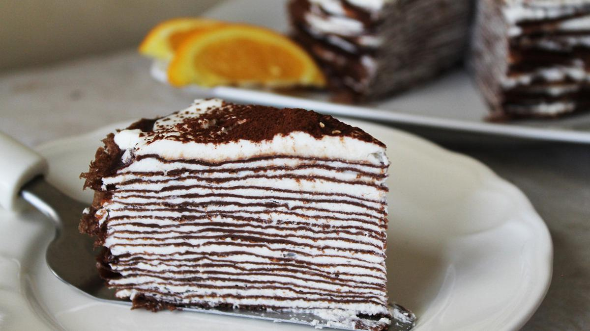

Resep Mille Crepe Cake

Kue cantik dengan lapisan crepe tipis dan krim lembut di antara setiap lapisan.
Bahan-bahan:
- 250 gram tepung terigu
- 3 butir telur
- 500 ml susu cair
- 2 sdm gula
- 50 gram mentega cair
- Krim kocok untuk lapisan
Cara Membuat:
- Campur semua bahan crepe hingga rata, diamkan selama 30 menit.
- Panaskan wajan anti lengket, tuang adonan sedikit demi sedikit hingga membentuk lapisan tipis.
- Masak hingga matang, lakukan hingga adonan habis.
- Susun crepe satu per satu dengan krim kocok di antara setiap lapisan.
- Dinginkan di kulkas sebelum disajikan.